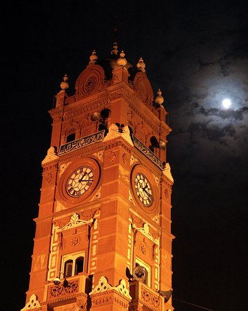

Welcome To Punjab Cities Details
1- Lahore

Lahore is the heart of PAKISTAN. Loving and whole hearted people live here .The History of Lahore is about 150 years old . During British era most of the constructions like . Railways , Hospitals and Universities are their signs of Government in Lahore.
2- RawalPindi

RawalPindi is the center of Pakistan as it is the combined with its Capital Islamabad It has the great place of Attarction for the tourists. The most of revenue is generated from here by Tourism.
3- Faislabad

Faislabad is well known for Fabric not only in Pakistan but also in all over the world. The revenue of cloths and fabrics are generated from here.